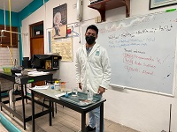
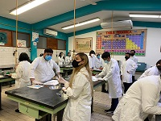

El colegio de bachilleres plantel cancún dos cuenta con los siguientes laboratorios:
Laboratorio de Informatica
El Objetivo de este laboratorio es proporcionar al estudiante un área de investigación y desarrollo que le permita utilizar la tecnología para realizar cualquier trabajo o proyecto que le sea asignado en los diferentes cursos.
Laboratorio de Quimica
 Los laboratorios químicos estudian compuestos y mezclas de elementos para comprobar las teorías de la ciencia. Mecheros, agitadores, ampollas de decantación, balones de destilación, cristalizadores, pipetas y tubos de ensayo son algunos de los instrumentos utilizados en este ámbito.
Laboratorio de Biologia
 El objetivo general es formar al alumnado en aquellos conceptos biológicos que, partiendo de los conocimientos adquiridos en bachillerato, le permitan comprender y asimilar las disciplinas del módulo de Biología.